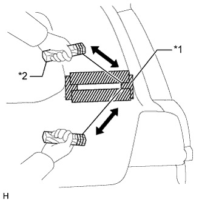

ТАБЛИЧКА ДАННЫХ ИЗГОТОВИТЕЛЯ (для моделей с эмблемой на стойке кузова) > СНЯТИЕ |
| 1. СНИМИТЕ НАКЛАДКУ НИЖНЕЙ БОКОВОЙ ПАНЕЛИ |
|  |
| Параметр / Устройство | Температура |
| Кузов автомобиля | 40-60°C (104-140°F) |
| Накладка нижней боковой панели | 20-30°C (68-86°F) |
Наложите вокруг накладки нижней боковой панели защитную ленту.
Поместите струнную проволоку между кузовом автомобиля и накладкой нижней боковой панели.
Привяжите к обоим концам проволоки предметы, заменяющие ручки (например, деревянные бруски).
Потянув за струнную проволоку, удалите двухстороннюю клейкую ленту, которой накладка нижней боковой панели прикреплена к кузову автомобиля.
Снимите накладку нижней боковой панели.
| *1 | Защитная клейкая лента |
| *2 | Деревянный брусок |